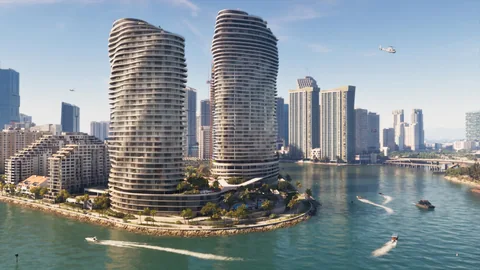
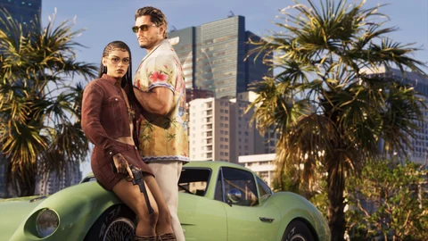
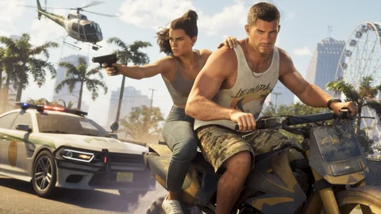

La FAQ de PlayStation
À la question du multijoueur, la page PlayStation du jeu répond : « GTA VI est une expérience solo ». La fiche Xbox n’indique que le jeu solo.
GTA Online, pas l’histoireCet espace parle du jeu en ligne. L’histoire de Jason et Lucia, ses achats et ses chiffres restent dans le reste du site. Les achats de l’histoire
Leonidakit · GTA Online · l’espace à part
Rockstar n’a annoncé aucun mode en ligne pour GTA VI : au 4 octobre 2026, le jeu est présenté comme une expérience solo. Voici ce que Rockstar et Take-Two ont dit, ce qui sépare cet espace de l’histoire, et ce qui reste à confirmer.
Cet espace est à part : rien ici ne se mélange avec l’histoire de Jason et Lucia, ses achats ou son calculateur. Le GTA Online de GTA V sert de repère, toujours présenté comme tel. Comprendre les statuts.
Pendant ce temps
Take-Two l’a redit le 17 septembre 2026 : le GTA Online de GTA V reste soutenu après la sortie de GTA VI, « et au-delà ».
Officiel1
Ici, sur Leonidakit
Le jour où Rockstar parlera, chaque annonce, chaque activité, chaque prix arrivera ici, avec sa source et son statut. En attendant, voici ce qu’on sait, en clair.
Ce qu’on sait
À la question du multijoueur, la page PlayStation du jeu répond : « GTA VI est une expérience solo ». La fiche Xbox n’indique que le jeu solo.
Take-Two l’a redit le 17 septembre 2026 : le GTA Online de GTA V restera soutenu après la sortie de GTA VI, « et au-delà ».
Officiel1
Pour Strauss Zelnick, patron de Take-Two, GTA VI sort en solo sur deux consoles : aucune dépense récurrente n’est prévue pour ce lancement.
Officiel1
Le patron de Twitch, Dan Clancy, l’a laissé entendre à Bloomberg en septembre 2026. Rockstar et Take-Two n’ont rien confirmé.
Ce qui change
Le site range à part tout ce qui touche au jeu en ligne. Voici pourquoi, et ce que chaque côté contient aujourd’hui.
L’histoire
Jason et Lucia, à Leonida : une expérience solo, avec ses achats, son calculateur et ses fiches, dans le reste du site.
Officiel1
Le jeu en ligne
Ni nom, ni date, ni prix, ni lien avec ta partie solo. Quand Rockstar en parlera, ses activités, ses achats et ses entreprises auront leurs pages ici, à part.
À confirmer1
Le repère
Celui de GTA V continue, et sert de repère sur cette page : un ordre d’idée, jamais un chiffre de GTA VI.
Officiel1
Les prix, gains et activités du jeu en ligne n’entreront jamais dans les catalogues, les achats ou le calculateur de l’histoire : ils auront leurs propres pages.
Activités

Courses, missions à plusieurs, affrontements : rien de tout cela n’est annoncé pour GTA VI. Cette rubrique s’ouvrira à la première activité publiée, avec son nombre de joueurs, son gain et sa durée.
Aucune activité du jeu en ligne de GTA VI n’est publiée. Dès qu’il y en aura, chacune arrivera ici avec son nombre de joueurs, son gain et sa durée, chacun avec sa source et son statut.
Rubrique de l’espace · Activités
Courses, missions à plusieurs, affrontements : rien de tout cela n’est annoncé pour GTA VI. Cette rubrique s’ouvrira à la première activité publiée, avec son nombre de joueurs, son gain et sa durée.
Aucune activité du jeu en ligne de GTA VI n’est publiée. Dès qu’il y en aura, chacune arrivera ici avec son nombre de joueurs, son gain et sa durée, chacun avec sa source et son statut.
GTA V Pour comparer : à son ouverture, le 1er octobre 2013, une partie de GTA Online réunissait jusqu’à 16 joueurs, entre missions en coopération, affrontements, courses et exploration libre. Identification communautaire12
GTA V Pour comparer : à son ouverture, le 1er octobre 2013, une partie de GTA Online réunissait jusqu’à 16 joueurs, entre missions en coopération, affrontements, courses et exploration libre. Identification communautaire12
Achats et entreprises

Véhicules, entreprises, abonnement : aucun prix du jeu en ligne de GTA VI n’existe. Quand ils arriveront, ils auront leur propre mode dans le calculateur, sans se mêler aux prix de l’histoire.
Aucun achat, aucune entreprise et aucun prix du jeu en ligne de GTA VI ne sont publiés. Les achats de l’histoire, eux, sont sur la page Achats. Les achats de l’histoire
Rubrique de l’espace · Achats et entreprises
Véhicules, entreprises, abonnement : aucun prix du jeu en ligne de GTA VI n’existe. Quand ils arriveront, ils auront leur propre mode dans le calculateur, sans se mêler aux prix de l’histoire.
Aucun achat, aucune entreprise et aucun prix du jeu en ligne de GTA VI ne sont publiés. Les achats de l’histoire, eux, sont sur la page Achats.
GTA V Pour comparer : dans le GTA Online actuel, les GTA$ s’achètent aussi en argent réel, avec les Shark Cards, et GTA+ est un abonnement mensuel. Officiel12
GTA V Pour comparer : dans le GTA Online actuel, les GTA$ s’achètent aussi en argent réel, avec les Shark Cards, et GTA+ est un abonnement mensuel. Officiel12
Pour GTA VI, Take-Two ne prévoit aucune dépense récurrente au lancement, puisque le jeu sort en solo ; la classification ESRB affiche tout de même des achats en jeu. Officiel12
Mises à jour

Un jeu en ligne vit par ses mises à jour. Celui de GTA VI n’existe pas ; celui de GTA V, lui, en reçoit toujours, et chacune a sa page officielle.
Aucune mise à jour du jeu en ligne de GTA VI, et pour cause : il n’est pas annoncé. Celles du GTA Online actuel continuent.
Rubrique de l’espace · Mises à jour
Un jeu en ligne vit par ses mises à jour. Celui de GTA VI n’existe pas ; celui de GTA V, lui, en reçoit toujours, et chacune a sa page officielle.
Aucune mise à jour du jeu en ligne de GTA VI, et pour cause : il n’est pas annoncé. Celles du GTA Online actuel continuent.
Le 10 décembre 2025 : le retour de Michael De Santa, des manoirs à Vinewood Hills, un nouveau créateur de missions et des véhicules.
Identification communautaire1
Le 14 juillet 2026 : un braquage d’œuvres d’art au Kortz Center, seul ou jusqu’à quatre joueurs, pour qui possède un manoir et son extension Art Studio.
Officiel1
Le GTA Online actuel en détail
Sources officielles
Rockstar parle d’une expérience solo ; Take-Two parle du GTA Online actuel. Les détails sont sur la page des annonces.
Strauss Zelnick dit avoir « toutes les raisons de croire » que GTA Online continuera, et cite NBA 2K Online, dont deux versions restent en service.

GTA VI, « une expérience solo », le 19 novembre sur PS5 et Xbox Series X|S ; un mois de GTA+ offert avec les précommandes numériques.

Un rythme de mises à jour stable pour GTA Online, que Take-Two compte continuer.

GTA VI est un jeu solo ; GTA Online sera soutenu après sa sortie, « et au-delà » ; aucune dépense récurrente prévue au lancement.

Le site officiel affiche la classification ESRB M, avec des achats en jeu.

Observations des joueurs
Joueurs et presse cherchent des indices. Voici ce qu’ils avancent, cité comme tel.
Questions ouvertes
L’espace est prêt ; il lui manque l’annonce.
Aucun jeu en ligne n’est annoncé pour GTA VI.
Inclus, vendu à part, lié à GTA+ : rien n’est dit.
Inconnus.
Aucun transfert annoncé, ni d’argent, ni de biens.
Rien d’officiel ; la fiche PlayStation dit le jeu jouable hors ligne.
Chaque réponse rejoindra l’espace avec sa source dès qu’elle sera publiée.
Outils du site
En attendant, prépare tes calculs, avec tes propres chiffres, et garde l’histoire à part.
Quand le jeu en ligne sera annoncé, ses prix auront leur propre mode dans le calculateur, sans se mêler à ceux de l’histoire.
Questions
Les questions qu’on tape dans un moteur de recherche, avec des réponses courtes et datées.
35 sources ouvertes
Chaque phrase de cet espace renvoie à une source datée. Les pages ont été relevées le 4 octobre 2026 par moteur de recherche : leur ouverture directe était bloquée depuis l’atelier ce jour-là.
Page ou vidéo publiée par Rockstar (site GTA VI, Newswire, trailers, Extended Look), ou propos d’un responsable de Rockstar rapportés par un média nommé, avec la date.
Ce qu’une image ou une séquence officielle montre, sans texte de Rockstar pour le dire : un plan de trailer, une capture, un moment de l’Extended Look, avec le minutage quand il est connu.
Rapprochement fait par des joueurs, un wiki ou un site de fans (lieu réel, acteur, comté). Cité comme tel, jamais présenté comme confirmé.
Question sans réponse publiée : prix, achat, accès, rôle dans l’histoire. On l’écrit pour ne pas la deviner.
Communiqué de Rockstar Games et Take-Two : GTA VI offre « une expérience solo », le 19 novembre 2026 sur PS5 et Xbox Series X|S ; un mois de GTA+ avec les précommandes numériques ; l’Édition Ultimate vise l’histoire de Jason et Lucia.
GTA VI est « une expérience solo », le 19 novembre sur PlayStation 5 et Xbox Series X|S.
GTA VI est présenté comme une expérience solo, le 19 novembre sur PlayStation 5 et Xbox Series X|S.
Sony promet une expérience solo « profondément captivante » pour le 19 novembre ; toute précommande sur le PlayStation Store donne un mois de GTA+.
À la question du multijoueur, la FAQ de la page PlayStation du jeu répond que GTA VI est une expérience solo.
Sur la fiche Xbox, le jeu solo est la seule fonction de jeu indiquée, sans mention multijoueur.
Le communiqué des précommandes ne parle pas de GTA Online ; GTA V et Red Dead Redemption 2 avaient eux aussi lancé leur jeu en ligne quelques semaines après l’histoire.
Le 3 février 2026, Strauss Zelnick (Take-Two) dit avoir « toutes les raisons de croire » que GTA Online continuera ; il cite NBA 2K Online, dont deux versions restent en service.
Pour le patron de Take-Two, GTA VI ne signe pas la fin de GTA Online.
21 mai 2026 : difficile de prévoir GTA Online après GTA VI, mais il restera sur le marché, avec beaucoup de joueurs fidèles ; GTA Online a progressé de 6 % sur l’exercice.
7 août 2026 : un rythme de mises à jour stable pour GTA Online, que Take-Two compte continuer à soutenir.
Jason Schreier (Bloomberg) : Take-Two ne parle de GTA VI que pour sa partie solo ; Rockstar ne parlera pas du jeu en ligne de sitôt.
L’assemblée annuelle des actionnaires de Take-Two se tient le 17 septembre 2026, en ligne et en audio seulement.
17 septembre 2026, assemblée de Take-Two : GTA VI est un jeu solo, et GTA Online sera soutenu « après la sortie de GTA 6 et au-delà ».
Strauss Zelnick : GTA VI sort en solo sur deux consoles, donc aucune dépense récurrente n’est prévue pour ce lancement ; GTA Online reste une activité solide.
Dan Clancy, patron de Twitch, à Bloomberg : un pic d’audience avec GTA VI, puis un plus grand « l’an prochain » avec le multijoueur. Rockstar n’a rien confirmé.
Les propos du patron de Twitch, repris par PC Gamer ; aucune confirmation de Rockstar ou de Take-Two.
Le site officiel affiche la classification ESRB M (17 ans et plus), avec la mention des achats en jeu.
Interprétation de Tech Times : sans la mention des interactions entre joueurs, pas de mode en ligne au lancement. Ni Rockstar ni l’ESRB ne l’ont dit.
Hypothèse : un futur GTA Online vendu à part, comme celui de GTA V aujourd’hui sur PS5 et Xbox Series.
Site de fans : Rockstar n’a confirmé aucun transfert de personnage, d’argent ou de biens vers GTA VI.
Mars 2025 : la version Enhanced de GTA V sur PC, gratuite, permet de reprendre sa progression Histoire et Online.
GTA V, sorti le 17 septembre 2013 sur PS3 et Xbox 360 : plus de 800 millions de dollars de ventes le premier jour.
GTA Online ouvre le 1er octobre 2013, deux semaines après GTA V, inclus avec le jeu.
À son lancement, une partie de GTA Online réunit jusqu’à 16 joueurs : missions en coopération, affrontements, courses, exploration libre.
Les Shark Cards ajoutent des GTA$ au solde de GTA Online ; elles s’achètent dans le jeu ou dans les boutiques.
Du 18 juin au 22 juillet 2026, les Shark Cards Great White, Whale et Megalodon donnent 40 % de GTA$ en plus.
GTA+, annoncé le 25 mars 2022 et lancé le 29 mars pour GTA Online sur PS5 et Xbox Series : 5,99 $ par mois, avec 500 000 GTA$ chaque mois.
GTA+ passe de 5,99 $ à 7,99 $ par mois en 2024 : le 11 avril pour les nouveaux abonnés, le 11 juin pour les autres.
Depuis le 6 novembre 2025, l’abonnement GTA+ inclut l’accès à GTA Online sur PS5 et Xbox Series X|S.
Sortie le 10 décembre 2025 : le retour de Michael De Santa, des manoirs à Vinewood Hills, un nouveau créateur de missions et des véhicules.
Depuis le 14 juillet 2026 : un braquage d’œuvres d’art au Kortz Center, seul ou jusqu’à quatre joueurs ; il faut un manoir et son extension Art Studio.
GTA Online jouable sans PS Plus ni Game Pass du 14 au 20 juillet 2026, sur PS5 et Xbox Series, pour accompagner The Kortz Center Heist.
Le mois de GTA+ des précommandes numériques (avant le 20 novembre 2026) s’active dans la boutique de la console et sert dans GTA Online : avant le 31 mars 2027 sur PS5, dans les 180 jours sur Xbox ; une fois par compte, puis renouvelé au prix normal.
Offre PlayStation : une fois par compte, pour les nouveaux, anciens et actuels abonnés, à activer au plus tard le 31 mars 2027 ; exclue à Bahreïn, en Chine, au Koweït, au Liban, à Oman, au Qatar, en Russie et à Taïwan.
Ce qu’on ne fait pas. Aucune donnée issue des fuites de 2022 ou de 2026, aucun chiffre du jeu en ligne mêlé à ceux de l’histoire, aucune date devinée. Les statuts sont expliqués dans le Tuto.
Le calculateur
Aucun prix du jeu en ligne de GTA VI n’est publié. Écris ce qu’une entreprise coûterait et ce qu’elle rapporterait : le calculateur te dit en combien de temps elle se rembourse, sans rien mêler à tes chiffres de l’histoire.
Et après ?
Chaque fiche se complète avec le jeu : ce qu’on y trouve, ce qu’on y fait, ce que ça rapporte. Rien d’inventé d’ici là.